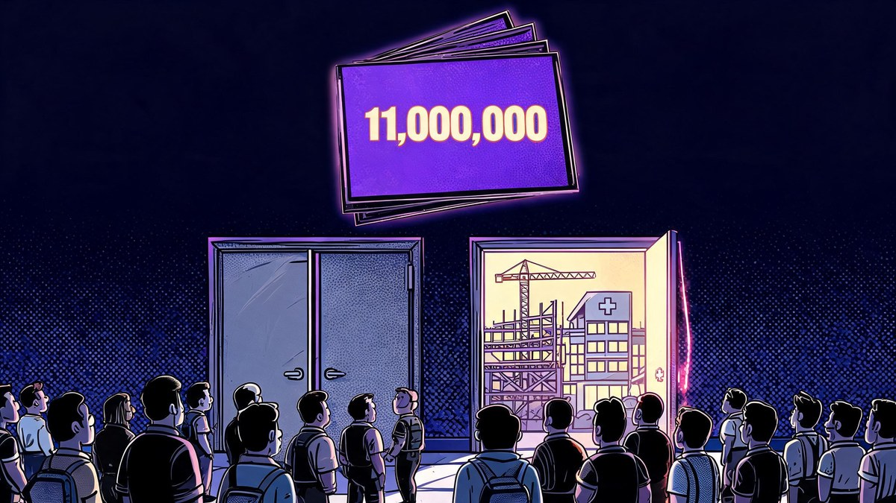
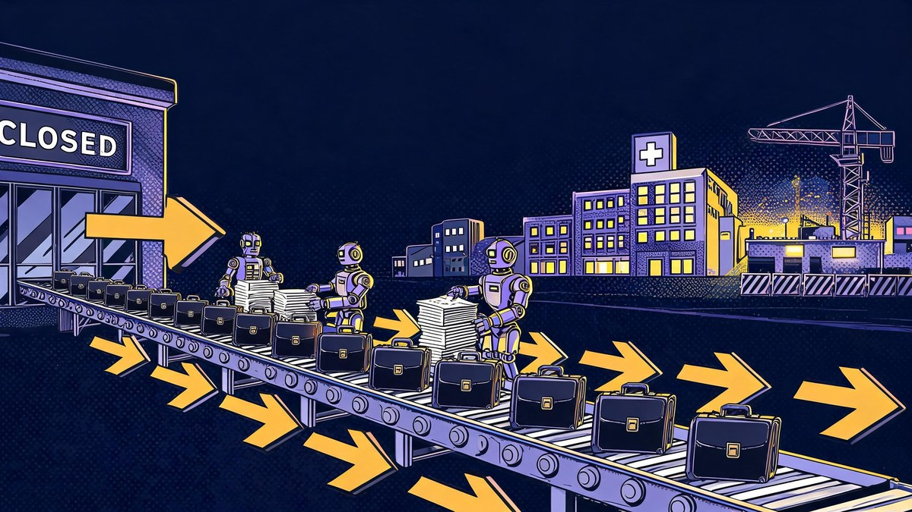
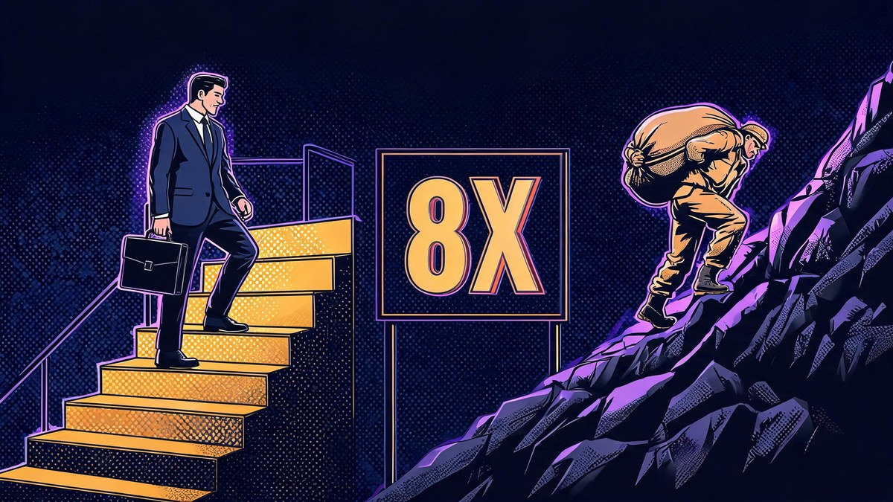
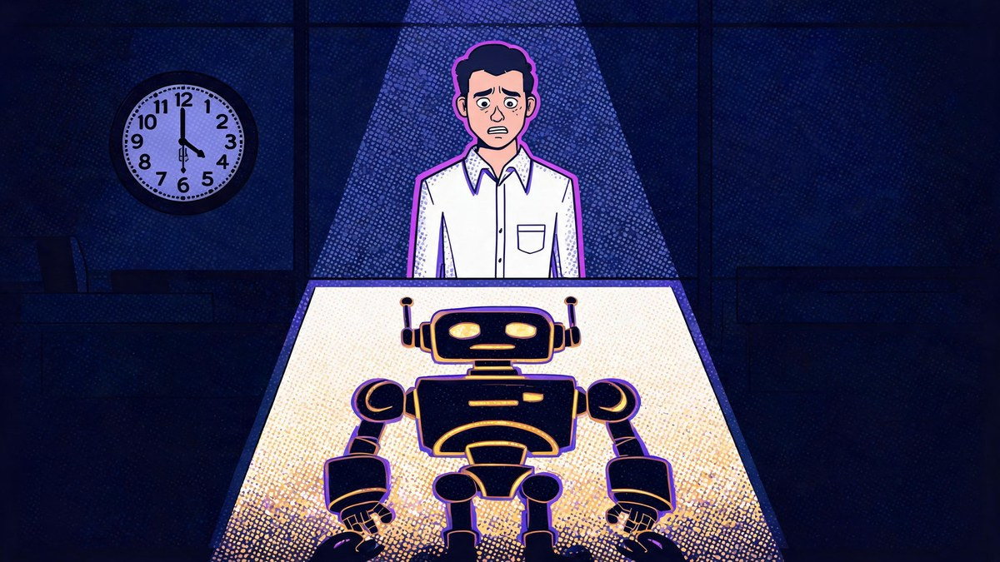

McKinsey 11 Million Workers AI Report: Who's Safe by 2035

The honest answer to the scariest headline of the week is that McKinsey is not predicting mass unemployment - it is predicting mass movement. What does the McKinsey 11 million workers AI jobs report actually say, and who is safe by 2035? Published by the McKinsey Global Institute on September 29, the analysis projects that AI and automation will cut US labor demand by roughly 36 million jobs by 2035 while creating about 41 million elsewhere - and that around 11 million workers, about 7% of the workforce, will have to switch occupations to land on the right side of that churn. This explainer decodes the real numbers, names who is most exposed, lists where the safe jobs are, and lays out a practical plan instead of panic.
The report, titled "Workforce in motion: Skills and pathways to future jobs in the United States," arrives with a rare dose of nuance for a doom-adjacent headline. Its base case sits inside a wide range - anywhere from 6 million to 16 million workers displaced depending on how fast agentic AI gets adopted - and its growth side is concentrated in healthcare, construction and management, where roughly 60% of new employment lands in the top two wage quintiles. The catch, and it is a serious one, is who bears the transition: lower-income workers are nearly eight times more likely than higher earners to be forced into a career switch, in an economy where occupational switches historically ran about 215,000 a year and may triple over the coming decade.
Quick answer: McKinsey Global Institute's September 29, 2026 report ("Workforce in motion") projects 11 million US workers (~7%) must switch occupations by 2035 (range: 6-16 million) as AI cuts demand for ~36 million jobs (21% of US labor demand) while creating ~41 million. Growth concentrates in healthcare, construction and management. Lower-income workers are nearly 8x more likely to be forced to switch. India's IT sector, meanwhile, added a net 1.35 lakh jobs in FY26 - adjustment through attrition, not layoffs. Full numbers, safe-job lists, and a 6-step plan below.
Table of Contents
- The short answer
- How I picked the signal from the noise: three tests
- What the McKinsey report actually says
- Who gets hit hardest: the 8x problem
- Where the 41 million new jobs come from
- Which jobs are safe from AI by 2035
- The India angle: opportunity, not doom
- FOBO: the anxiety this report validates
- The strongest counterargument, answered
- What to actually do before 2035
- FAQs
- The Bottom Line
The short answer
McKinsey's number is big but bounded: about 11 million US workers - roughly 7% of the workforce, in a range spanning 6 to 16 million - will need to change occupations by 2035 because AI and automation cut demand for their roles. The same model shows about 36 million jobs of labor demand disappearing while about 41 million appear, a net positive of roughly 5 million. The problem the report quietly documents is match friction: the disappearing work (office administration, agriculture, customer service) and the growing work (healthcare, construction, management) sit in different places, requiring different skills, and paying very differently - about 60% of the growing employment lands in the top two wage quintiles. Workers who move early and move deliberately capture the upside; workers who wait for the market to decide for them become the 8x statistic.
How I picked the signal from the noise: three tests
I applied three tests before treating any number in this article as load-bearing. First, the primary-source test: every headline number needed either the McKinsey Global Institute's own text or a tier-one report of it (Bloomberg first, then Fortune, CNN, Fast Company) - social media summaries did not qualify. Second, the range test: a forecast that publishes only a point estimate is marketing; MGI published a 6-16 million range, and I report the range with the base case labeled as such. Third, the track-record test: I checked how prior automation forecasts performed (section 9), because the field's history demands humility about magnitudes.
Two widely shared claims failed the tests and were excluded. A viral "Naukri 82,000 AI postings" figure for India could not be traced to a primary source (verified alternative: 35,000+ AI/ML postings in a single quarter, per Naukri's own release). And the "+15% to India's GDP" line circulating this week is Accenture's estimate, not McKinsey's - the genuine McKinsey-linked India figure is a joint NASSCOM-McKinsey projection of a 1.4 million AI-talent gap by 2026. Where evidence is thin, this article says so instead of rounding it into confidence.
What the McKinsey report actually says
The McKinsey Global Institute published "Workforce in motion: Skills and pathways to future jobs in the United States" on Tuesday, September 29, 2026. Its base case: agentic AI adoption reduces US labor demand by roughly 36 million jobs by 2035 - about 21% of total labor demand per Fast Company's read of the report - while economic growth creates about 41 million roles. Approximately 11 million workers (about 7% of the workforce; CNN computes 6.5% of the labor force, a denominator difference worth noting) cannot stay in their current occupation and must retrain into different ones, within a scenario band of 6 to 16 million depending on adoption speed.
The pace framing may matter more than the totals. Bloomberg's coverage notes that annual occupational switches, which historically ran around 215,000 a year, may triple over the next decade - meaning the labor market will be asked to absorb career changes at a rate it has never sustained, even if the net total is positive. Forbes called the shift "the largest workforce transformation in history," and the phrase is defensible precisely because the report is about motion, not elimination.

How many jobs will AI replace by 2035?
McKinsey's base case projects about 36 million US jobs of labor demand reduced by 2035 - roughly 21% of total labor demand - offset by about 41 million jobs created in growing sectors, for a net gain of around 5 million. About 11 million workers (6-16 million across scenarios) will need to change occupations entirely because their shrinking roles do not map one-to-one onto the growing ones. Replaced is the wrong verb for most of this: demand shrinks, tasks get redistributed, and the workers inside those roles bear the transition cost.
Who gets hit hardest: the 8x problem
The report's sharpest finding is distributional, and almost no coverage led with it. Lower-income workers are nearly eight times more likely than higher earners to be forced into an occupation switch - meaning the people with the least savings, the least schedule flexibility, and the least access to retraining carry the largest share of the transition. That single ratio turns an abstract macro forecast into a policy and personal-finance problem.
The occupational hit list follows the same pattern. Fast Company's summary of the report names office and administrative support, agriculture, fishing and forestry among the most affected; customer service representatives and secretaries appear in the declining set of earlier McKinsey modeling. These are roles with high task routine-ness and low wage buffers - the exact profile that makes switching expensive. The growing side, by contrast, concentrates in healthcare, construction and management, with roughly 60% of new employment landing in the top two wage quintiles: the jobs being created pay more than the jobs disappearing, but only for workers who can reach them.
| Side | Sectors / roles | Scale (base case) | Key evidence |
|---|---|---|---|
| Shrinking demand | Office & admin support, customer service, secretaries, agriculture, fishing, forestry | ~36M jobs of demand cut (21% of US labor demand) | MGI report via Fast Company, CNN, Bloomberg |
| Growing demand | Healthcare, construction, management; AI-specialist roles | ~41M jobs created (net +5M) | Fortune, MGI; WEF 170M-vs-92M global parallel |
| Must switch | 11M workers (~7% workforce) | Range 6M-16M by 2035 | Bloomberg, CNN, Fortune |
| Fastest-growing (US) | Nurse practitioners ~40%; home health aides +681K | BLS 2024-2034 projections | BLS official |
| Switching pace | ~215K/year historically | May triple over next decade | Bloomberg wire |
| India FY26 | Net +1.35 lakh tech hiring; 1.4M AI-talent gap | $315B+ revenue, headcount 5.95M | NASSCOM; NASSCOM-McKinsey |
| Anxiety data | FOBO 22% (chronic); skill-obsolescence fear 58% / 74% tech | Gallup 2023; ADP 2026; HR Dive Aug 2026 | Named surveys |

Where the 41 million new jobs come from
The growing side of McKinsey's ledger concentrates in three sectors - healthcare, construction and management - and the pattern repeats across independent sources. The World Economic Forum's Future of Jobs analysis projects 170 million jobs created against 92 million displaced globally by 2030, with big-data specialists, fintech engineers, AI and machine-learning specialists and software developers topping the fastest-growing list, alongside care workers, nurses and educators. The US Bureau of Labor Statistics' 2024-2034 projections agree on the care-economy engine: nurse practitioners are among the fastest-growing occupations at roughly 40% growth, and home health and personal care aides add the most absolute jobs - about 681,000.
New job categories are also forming around the technology itself: AI agent orchestration specialists, agentic-AI engineers and AI-automation engineers now appear in enterprise job boards and vendor workforce reports, though these titles are too new for official occupation codes - treat them as directional signals rather than measured statistics. The honest synthesis: the 41 million are not sci-fi jobs; they are disproportionately care work, skilled trades and management-plus-AI hybrids, which is either reassuring (humans stay in the loop) or sobering (many require physical presence the displaced office workers cannot easily relocate into).
Which jobs are safe from AI by 2035
Safety, across every credible source this report aligns with, comes from three properties: physical presence in unpredictable environments, human trust and care, and judgment over genuinely novel situations. Microsoft's research team analyzed 200,000 anonymized Copilot conversations and found the least-exposed occupations were physically anchored roles - roofers, dredge operators, water treatment plant operators - while the most-assisted were office, language and knowledge tasks. McKinsey's own framing cuts the same way: 57% of tasks being automatable does not mean 57% of jobs disappear, because most jobs are bundles of automatable and non-automatable tasks.
Concretely, the resilient list across McKinsey, WEF and BLS converges on: healthcare and personal care (nurses, aides, therapists), skilled trades (electricians, plumbers, construction), frontline management, education, and AI-adjacent technical roles (specialists, engineers, orchestrators). The caveat deserves its own sentence: "safe" means lower displacement probability over a ten-year horizon, not immunity - robotics progress erodes the physical moat gradually, and 2015's safe lists look different from 2026's.
Which jobs are safe from AI by 2035?
Three converging sources (McKinsey's new report, the WEF Future of Jobs projections, and US BLS 2024-2034 data) agree on the profile: jobs requiring physical presence in unpredictable settings, human trust and care, and novel-situation judgment. Concrete lists: nurse practitioners (~40% projected growth), home health and personal care aides (+681,000 jobs, the largest absolute gain), skilled trades, construction, frontline management, educators, and AI-specialist roles. The safest framing is not "AI-proof" but "AI-resistant with a decade of evidence behind it."
The India angle: opportunity, not doom
For Indian readers - half the reason this report matters here - the domestic data tells a different story from the US headlines. NASSCOM's FY2026 sector review put net tech hiring at roughly +1.35 lakh (135,000) jobs, taking headcount to about 5.95 million on revenue above $315 billion; growth is modest by historical standards (headcount up just 2.3%), but it is growth, not collapse. Naukri's own releases counted 35,000+ AI/ML job postings in a single quarter (up 38% year over year), and salary premiums for AI skills run 38-54% across Indian surveys. The government layer is moving too: the IndiaAI Mission carries a ₹1,000-crore allocation for FY26-27, and the Prime Minister's August 15, 2026 address pledged AI skilling for one crore youth - implementation details still pending, so treat it as intent rather than program.
The risk map inside India is narrower but real: BPO and data-entry work is most exposed (an earlier industry survey found 67% of BPO firms had already automated more than half of data-processing tasks), translation and back-office roles face the same task-routine pressure as their US counterparts, and fresher hiring has been muted - Infosys is planning only about 20,000 fresher intake for FY27, roughly flat. The credible academic middle ground comes from ICRIER (February 2026): generative AI is boosting productivity without mass layoffs so far, with adjustment happening through attrition and contract non-renewal rather than layoffs. The McKinsey-linked number Indian media should be quoting: a joint NASSCOM-McKinsey projection of a 1.4 million AI-talent gap by 2026 - a skills shortage, which is an opportunity frame the US coverage never needed.
How does the McKinsey report affect Indian workers?
Indirectly but significantly. The 11-million figure is US-specific, but the same task-automation logic applies to India's BPO, back-office and translation segments, where routine tasks dominate. The offsetting Indian data: net tech hiring of +1.35 lakh in FY26, AI/ML postings growing 38% year over year in a single quarter, AI salary premiums of 38-54%, and a projected 1.4 million AI-talent gap (NASSCOM-McKinsey) that makes reskilling the single highest-leverage career move for Indian tech workers. Government programs (IndiaAI Mission, ₹1,000 crore; a one-crore-youth skilling pledge) signal direction, though implementation is still thin.
FOBO: the anxiety this report validates
The acronym circulating with this report is FOBO - fear of becoming obsolete - and the data suggests it is chronic rather than spiking. Gallup measured 22% of US workers worrying that technology could make their jobs obsolete in 2023, up seven points from 2021; ADP Research's 2026 People at Work survey (39,000 workers across 36 countries) found 22% strongly agree their job is safe from AI-driven automation - essentially unchanged year over year. What is rising is subtler: HR Dive reported in August 2026 that 58% of workers fear their skills will become obsolete, climbing to 74% among tech workers. The anxiety is migrating from "will my job exist" to "will my skills still count," which is precisely the transition McKinsey's report is about - and the reason a skills-first plan (next section) outperforms doom-scrolling.

The strongest counterargument, answered
The strongest critique of this report is the field's track record. In 2013, Oxford's Frey and Osborne famously computed that 47% of US jobs were at high risk of automation; OECD economists (Arntz, Gregory and Zierahn) rebuilt the model at the worker level and the number collapsed to roughly 9%. Brookings projected in 2019 that 36 million US jobs faced high exposure by 2030 - a forecast whose "exposure" framing got laundered into "will lose their jobs" in secondary headlines, and whose verdict is still pending. Davenport and Paredes, writing in the Harvard Data Science Review, judged AI job predictions "wildly inaccurate," and even McKinsey's own 2017 automation study published a 16-54 million range - a 3.4x uncertainty spread. Community skepticism on Reddit makes the same point more bluntly: consultancies have been selling transition reports for a decade, and the robots are still not here.
The response survives because this report is deliberately humbler than its ancestors. Eleven million by 2035 is about 7% of the workforce - more conservative than Frey-Osborne's 47% and even below the OECD-style worker-level floor (9% of US jobs works out to roughly 14 million). The defensible critique of McKinsey's number is magnitude uncertainty, not direction: every serious modeler now agrees the transition is real, large, and unevenly distributed; what nobody can pin is the exact count within a 6-16 million band. Reading it as a precise prophecy would be a mistake - reading it as a bounded, weighted scenario for career planning is exactly what it was built for. The track record argues for acting on direction while discounting precision, not for ignoring the signal.
What to actually do before 2035
What should you do if AI takes your job quiz answers boil down to?
Six moves, in leverage order. The report's implicit advice, made explicit: the workers who win the churn are the ones who move first.
- Run a task audit on your own job. List what you actually do weekly; mark which tasks are routine-digital (AI-exposed) versus physical, interpersonal or novel-judgment. Your exposure is your task mix, not your job title - 57% of tasks automatable does not mean your job vanishes.
- Build AI fluency now, not certificates. McKinsey's fastest-growing skills list starts with AI fluency; in India, AI-skill premiums run 38-54%. Ten focused hours a week on real tools beats a weekend course.
- Aim at the growing clusters, not the shrinking ones. Healthcare, skilled trades, construction and management-plus-AI hold the 41 million; check your region's BLS or NASSCOM data before picking a lane.
- Stack income during the transition. The 8x stat means lower-income workers have the least runway; a side income stream funded by current skills buys the time the switch requires.
- Time the move to the adoption curve. Annual occupational switches may triple over the decade - moving in 2026-2027, before the crowd, means competing against today's demand, not 2032's glut.
- If you are in India, target the gap, not the fear. The 1.4 million AI-talent shortage (NASSCOM-McKinsey) is the demand signal; IndiaAI Mission programs and FutureSkills-style reimbursements are the subsidized on-ramps.
Key takeaway: The report's math is net-positive (+5M jobs) but the transition is brutal and uneven - 8x pressure on lower-income workers, tripled switching pace, and 60% of new jobs landing in higher wage quintiles. The winning move is timing: audit your tasks, build AI fluency, and step toward the healthcare-construction-management clusters before the crowd does, because early movers compete with today's demand while late movers compete with 2032's glut.
FAQs
?How many jobs will AI replace by 2035?
McKinsey Global Institute's September 29, 2026 report projects AI and automation will reduce US labor demand by about 36 million jobs by 2035 - roughly 21% of labor demand - while creating about 41 million elsewhere, a net gain of around 5 million. The operative number for workers: about 11 million people (roughly 7% of the workforce, within a 6-16 million scenario range) will need to switch occupations entirely because their shrinking roles do not map onto the growing ones.
?Is the McKinsey 11 million workers report accurate?
It is a modeled scenario, not a prophecy - and a comparatively humble one. The 11 million base case sits inside a published 6-16 million range, making it more conservative than Oxford's famous 47% automation forecast (2013), which OECD economists later re-estimated at about 9% using worker-level data. Critics including Davenport and Paredes (Harvard Data Science Review) call AI job predictions "wildly inaccurate" in magnitude, and McKinsey's own 2017 study carried a 16-54 million range. Direction: widely accepted. Precision: nobody has it - plan on the range, not the point estimate.
?Which jobs are safe from AI by 2035?
Jobs built on physical presence in unpredictable environments, human trust and care, and novel-situation judgment. The convergence across McKinsey, the WEF Future of Jobs report and US BLS projections: nurse practitioners (~40% projected growth), home health and personal care aides (+681,000 jobs, the largest absolute gain), skilled trades like electricians and plumbers, construction, frontline management, educators, and AI-specialist roles. Microsoft's 200,000-conversation study found roofers, dredge operators and water treatment operators least exposed. "Safe" means lower risk over a decade, not immunity.
?Will AI create more jobs than it destroys?
Yes, per McKinsey's base case: about 41 million jobs created against 36 million of reduced labor demand by 2035 - a net positive of roughly 5 million. The World Economic Forum projects the same pattern globally (170 million created vs 92 million displaced by 2030). The catch: the created jobs differ from the destroyed ones in location, sector and skill - about 60% of the growth lands in the top two wage quintiles - so the net-positive math does not reach every displaced worker automatically. The transition, not the total, is the real story.
?What should I do if AI takes my job?
Six moves, in leverage order: audit your daily tasks to find which are routine-digital (exposed) versus physical or judgment-based (resilient); build real AI fluency with tools, not just certificates; target growing clusters - healthcare, skilled trades, construction, management-plus-AI; stack a side income to buy transition runway; move early, because occupational switches may triple over the decade and early movers face today's competition rather than tomorrow's glut; and if you are in India, aim at the documented 1.4 million AI-talent gap using subsidized programs like the IndiaAI Mission.
?What is FOBO?
FOBO is the "fear of becoming obsolete" - anxiety that technology, especially AI, will make your job or skills unnecessary. Current data shows it is chronic rather than exploding: Gallup measured 22% of US workers worrying about technological obsolescence in 2023 (up 7 points from 2021), and ADP Research's 2026 survey of 39,000 workers found 22% strongly agree their job is safe - flat year over year. The rising variant is skill anxiety: 58% of workers fear their skills will become obsolete, rising to 74% among tech workers, which is exactly the gap a reskilling plan addresses.
?How does this affect Indian workers?
Through the same task-automation logic, with different numbers. Most exposed: BPO and data-entry work (an industry survey found 67% of BPO firms had automated over half of data-processing tasks), translation and routine back-office roles. The offsetting data: net tech hiring of +1.35 lakh jobs in FY26 (NASSCOM, headcount 5.95 million on $315B+ revenue), AI/ML job postings up 38% year over year in a single quarter, AI salary premiums of 38-54%, and a projected 1.4 million AI-talent gap by 2026 (NASSCOM-McKinsey) that makes reskilling the highest-leverage move for Indian tech workers.
?Which workers face the highest risk from AI?
Lower-income workers, by a wide margin: McKinsey's report finds they are nearly eight times more likely than higher earners to be forced into an occupation switch by 2035. Occupation-wise, the declining set includes office and administrative support, agriculture, fishing and forestry, customer service representatives and secretaries - roles high in routine tasks and low in wage buffers. The compounding problem: the growing jobs (healthcare, construction, management) pay more than the shrinking ones, but about 60% of that growth lands in the top two wage quintiles, so the workers most exposed also face the longest climb.
The Bottom Line
McKinsey's 11-million-workers report is best read as a map of motion, not a countdown to unemployment: 36 million jobs of demand fade, 41 million appear, and 11 million people stand on the wrong side of the gap unless they move. The report's own math makes the case for urgency better than its critics make the case for complacency - occupational switching may triple, lower-income workers carry eight times the risk, and the growing jobs pay more but demand different skills and often different addresses. Forecasts of this kind have been wrong before, mostly in magnitude, rarely in direction. The rational response is neither panic nor dismissal: audit your tasks this month, build AI fluency this year, and aim your next career move at the clusters where the 41 million are actually landing.
Sources verified October 5, 2026. This article analyzes a third-party economic forecast for general audiences; it is not career, financial or investment advice.
Sources
- mckinsey.com - McKinsey Global Institute, "Workforce in motion: Skills and pathways to future jobs in the United States" (Sep 29, 2026)
- bloomberg.com - "AI May Force 11 Million Workers Into New Jobs, McKinsey Says" (Sep 29, 2026)
- fortune.com - "AI will create more jobs than it kills, McKinsey says. The catch" (Oct 3, 2026)
- cnn.com - "AI could force 11 million US workers into new careers by 2035" (Sep 29, 2026)
- fastcompany.com - "AI could displace 11 million US workers by 2035" (21% of labor demand; occupation lists)
- kkco11news.com - MGI interactive: lower-income workers nearly 8x more likely to switch occupations
- weforum.org - WEF Future of Jobs: 170M created vs 92M displaced by 2030; fastest-growing roles
- bls.gov - BLS 2024-2034 projections: nurse practitioners ~40% growth; home health aides +681K
- microsoft.com - 200,000 Copilot conversation study (Jul 2025): least-exposed occupations
- nasscom.in - NASSCOM FY2026 review: +1.35 lakh net hiring, $315B+ revenue
- naukri.com - Naukri JobSpeak: 35,000+ AI/ML postings in a quarter (+38% YoY)
- niti.gov.in - NITI Aayog: AI to add $500-600B to India's GDP by 2035
- economictimes.indiatimes.com - NASSCOM-McKinsey: 1.4M AI-talent gap by 2026
- icrier.org - ICRIER (Feb 2026): GenAI boosts productivity without mass layoffs
- oxfordmartin.ox.ac.uk - Frey & Osborne, "The Future of Employment" (47%, 2013)
- OECD/Arntz et al. - worker-level re-estimation (~9%, Economics Letters 2017)
- brookings.edu - "What jobs are affected by automation?" (36M high-exposure, 2019)
- hdsr.mitpress.mit.edu - Davenport & Paredes on AI job-prediction accuracy (Fall 2025)
- news.gallup.com - Gallup: 22% worry tech makes their job obsolete (2023)
- adp.com - ADP Research People at Work 2026: 39,000 workers, 36 countries
- HR Dive (Aug 2026) - 58% fear skill obsolescence; 74% among tech workers
- indiaai.gov.in - IndiaAI Mission: ₹1,000 crore FY26-27 allocation